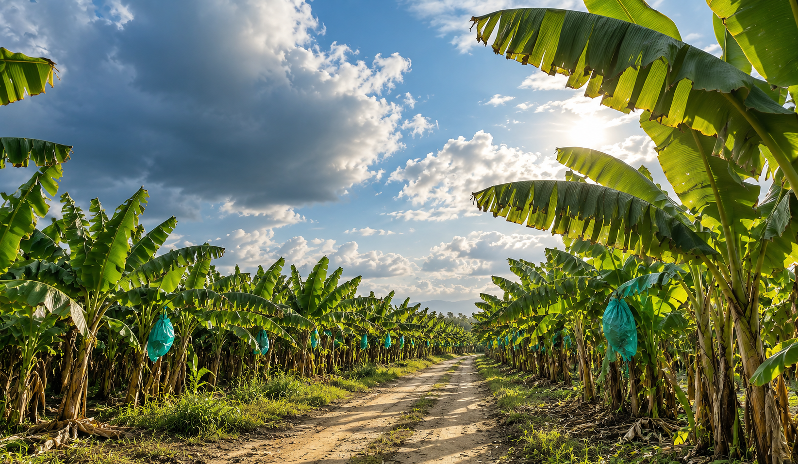

Destacada
Encuentro de equipos en Santa Marta
Resumen de la jornada, participantes y próximos encuentros internos.
Leer noticia
Servicios y recursos de uso diario.
Resumen de la jornada, participantes y próximos encuentros internos.
Leer noticia